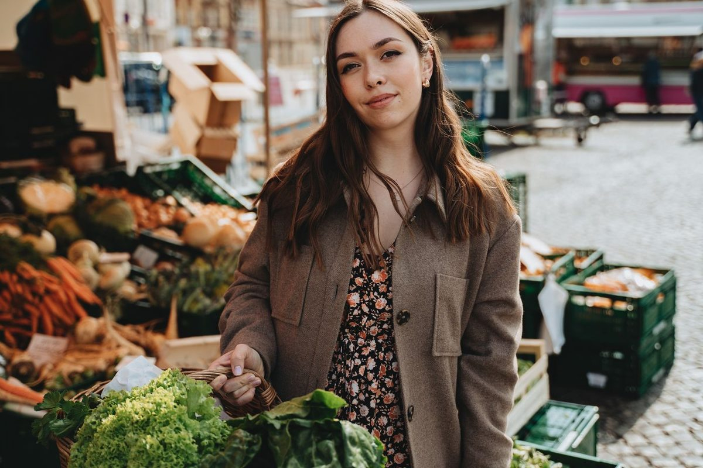
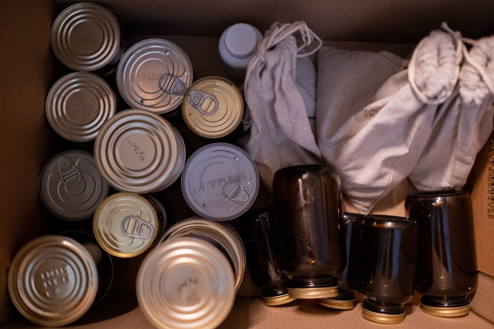
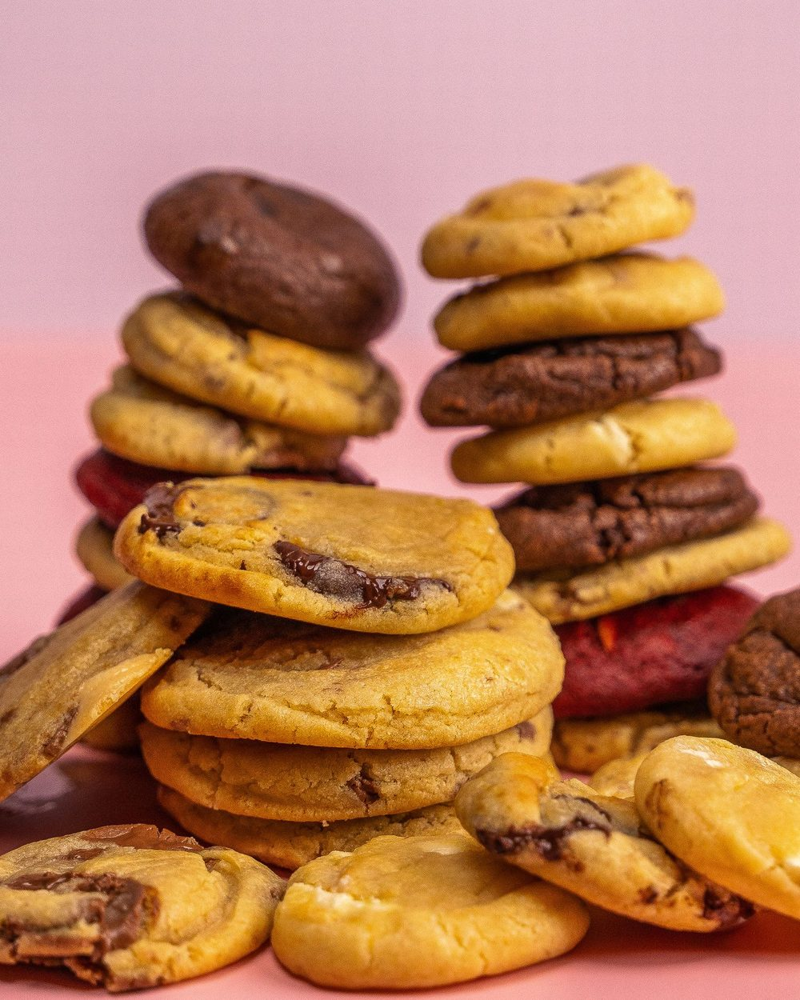
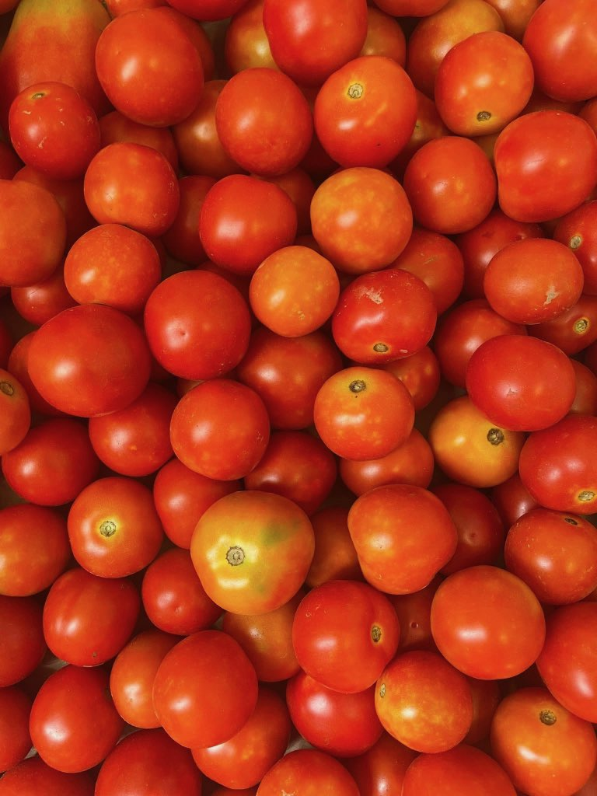
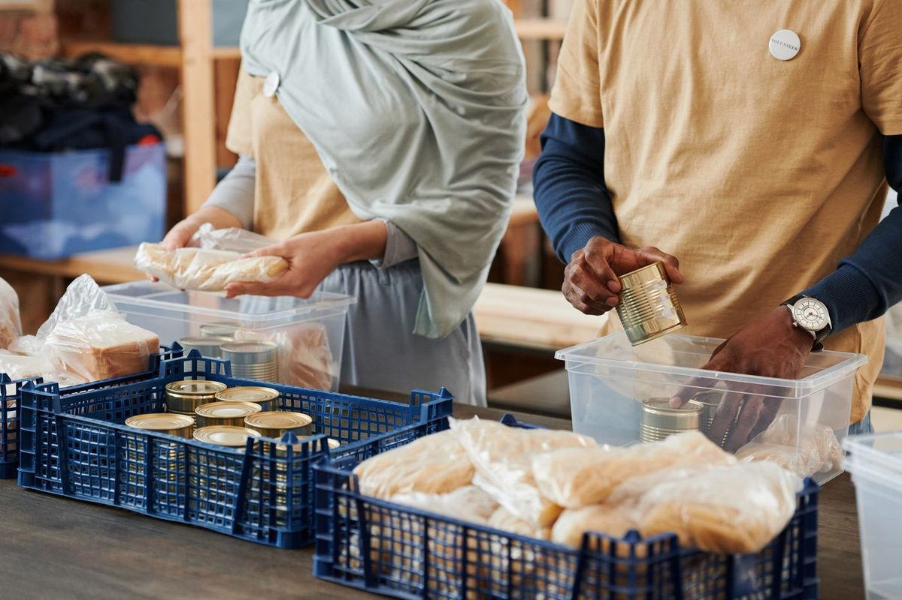
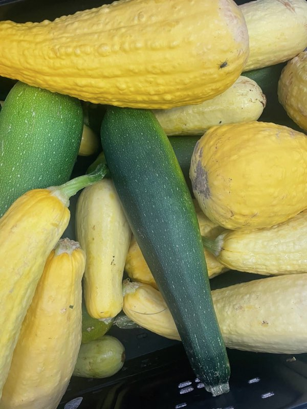
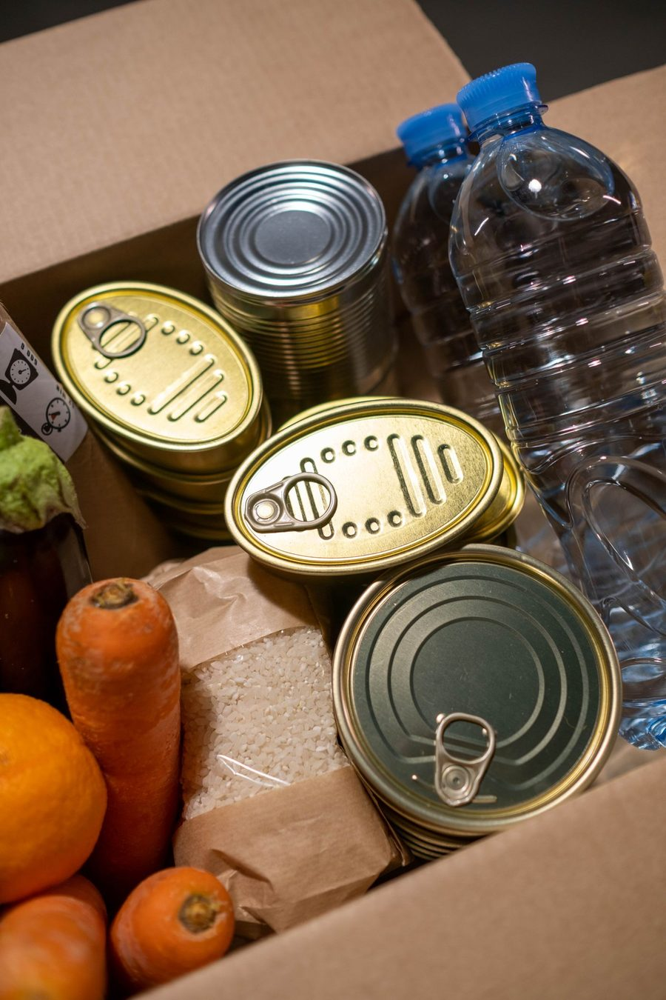
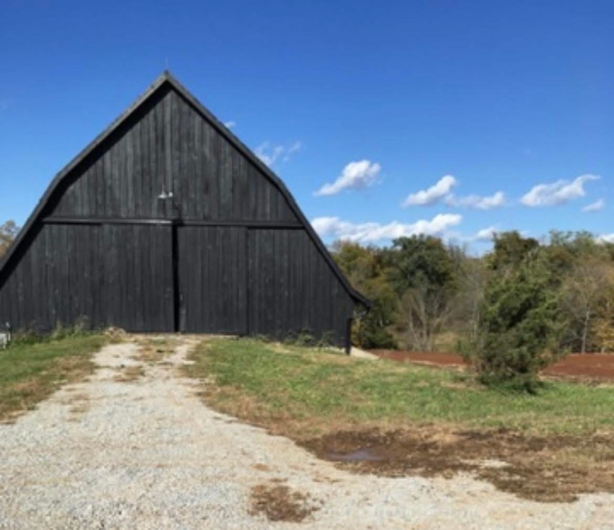
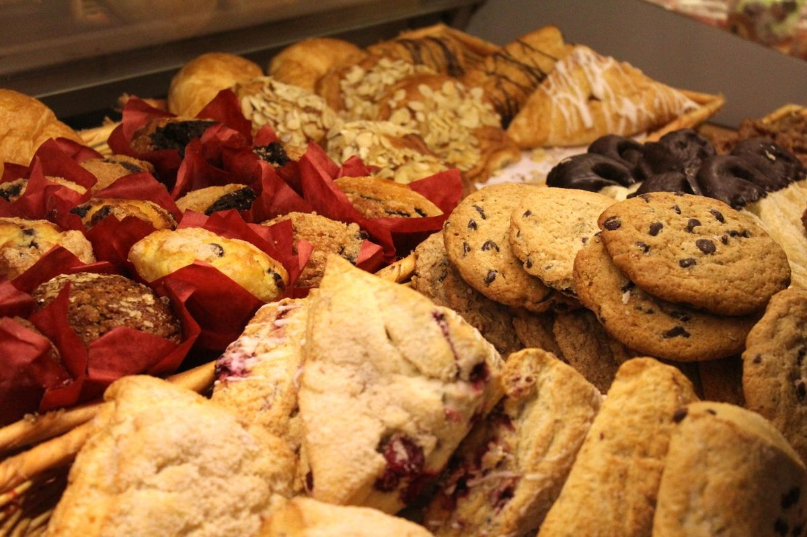

We serve clients by appointment only.
We serve clients throughout Kentucky and do not require documentation or proof of income.
Get help
Bread of Life is dedicated to providing fresh, healthy food to our neighbors.
We serve clients by appointment only. We are open from 12:30 to 4:30 p.m. every Tuesday and from 10 a.m. to 2 p.m. every Wednesday.






We serve clients throughout Kentucky and do not require documentation or proof of income.
Get help
Donations of canned goods and other shelf-stable food can be made at our pantry.
Give help
Their generosity allows us to take in and give away more than 6,000 pounds of food each month.
Learn moreWhether your family consists of one person or several, you are welcome to sign up for food. Dozens of volunteers serve the more than 100 families who shop with us each week. At Bread of Life we bring dignity, warmth and compassion into everything we do and are guided by the scripture in Matthew 25:34-40:
“Then the King will say to those on his right, ‘Enter, you who are blessed by my Father! Take what’s coming to you in this kingdom. It’s been ready for you since the world’s foundation. And here’s why:
I was hungry and you fed me,
I was thirsty and you gave me a drink,
I was homeless and you gave me a room,
I was shivering and you gave me clothes,
I was sick and you stopped to visit,
I was in prison and you came to me.’
“Then those ‘sheep’ are going to say, ‘Master, what are you talking about? When did we ever see you hungry and feed you, thirsty and give you a drink? And when did we ever see you sick or in prison and come to you?’ Then the King will say, ‘I’m telling the solemn truth: Whenever you did one of these things to someone overlooked or ignored, that was me—you did it to me.’”
Bread of Life provides access to services through strong community partnerships, serving every neighbor with compassion and dignity.
A community where every neighbor thrives.
